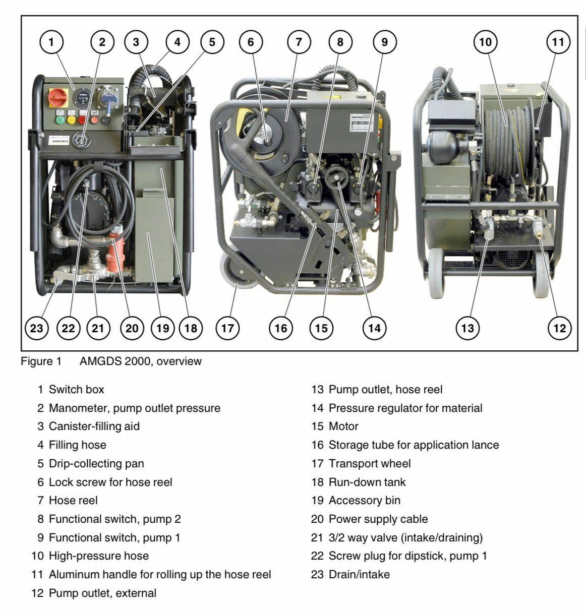
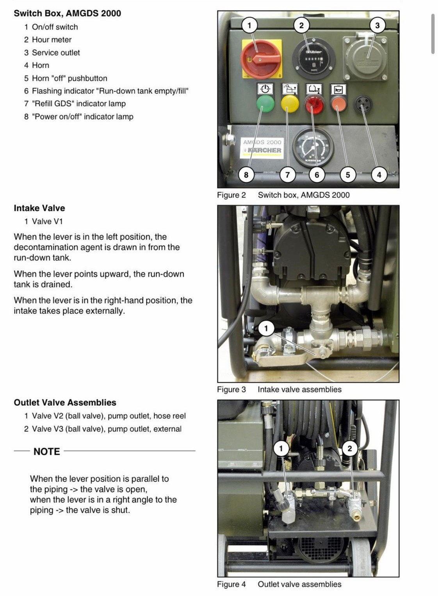
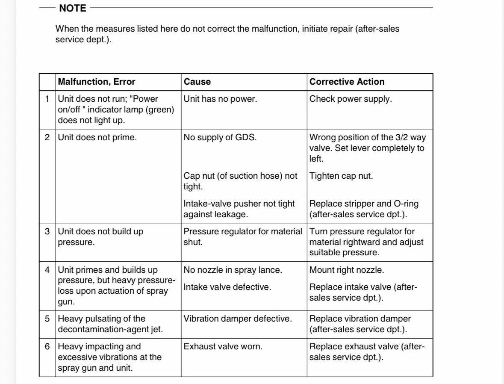

AMGDS 2000
Intended purpose
The AMGDS 2000 module is used for C decontamination of material as well as decontamination of streets/roads.
The non-aqueous decontamination agent GDS 2000 is applied with the AMGDS 2000.
Technical data
(1) Dimensiions, Weight, VolumeDimensions : 700m
Length : 600m
Width : 780m
Weight : 130m
Run-down tank : 40l
(2) Motor
Rated voltage : 400V/50 Hz
Power consumption : 3 kW
Fuse protection : Min. 16 A, time-delayed
Speed : 2800 RPM
Lube-oil filling : 1.8l (Esso Nuto H 22)
(3) Pump
Type : Double-membrane pump SF 82
Operating pressure : 10 to 150 bar
Flow rate : 60 to 480 l/h
(4) Temperatures
Operating Temperature : -32 to 50 °C
(5) Other Data
High-pressure hose : 15m
Equipment overview

Equipment notes

Fault Localization and Trouble Shooting
